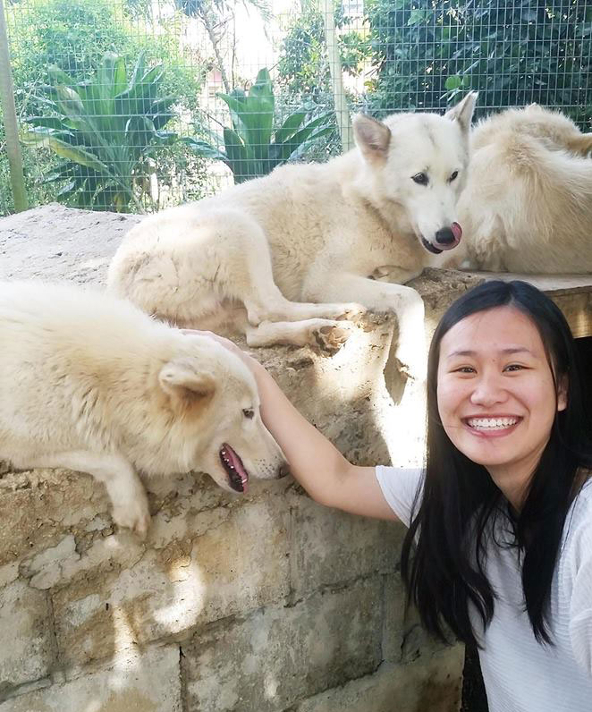

<div class="about-me">
<h1>Hi, I'm Shannon!</h1>

<h2>
I design products and experiences for people.
</h2>

<p>
I'm currently finishing up my last semester at UC Berkeley studying Cognitive Science, mixed in with human-centered design.  If you're curious about what I've done, you can find my resum&eacute; <a class="links" href="images/resume.pdf" target="_newtab">here</a>.
</p>

<p>
I have a very strong affection for corgis and lettering. I can lick my elbow.
</p>

<p>If you'd like to make cool things together or chat with me please <a class="links" href="mailto:shannonchu@berkeley.edu">get in touch!</a></p>

<p>Thanks for visiting my website <i class="fa fa-smile-o"></i> </p>
</div>
